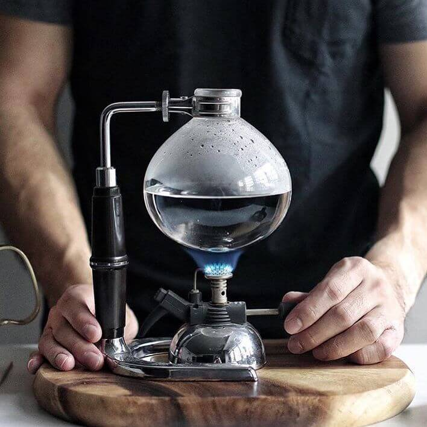
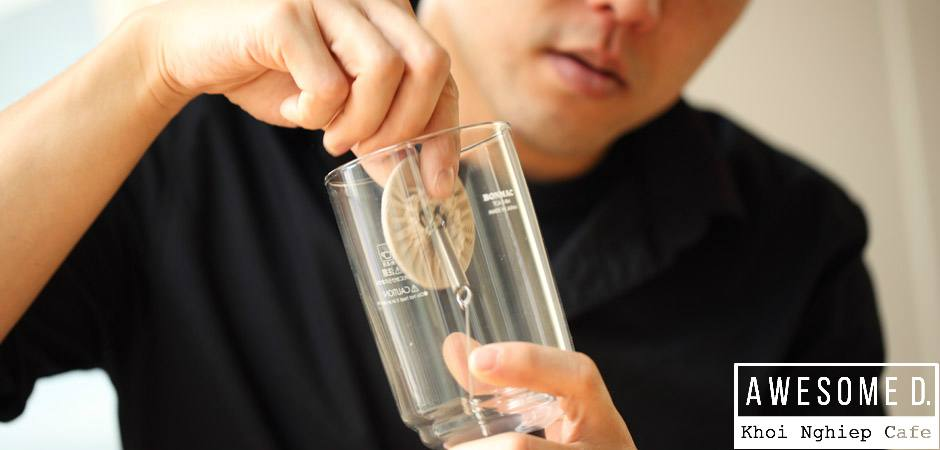
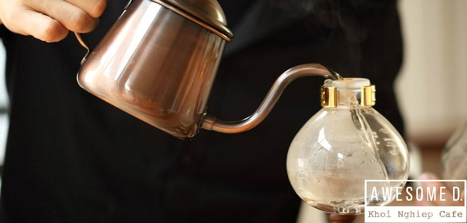
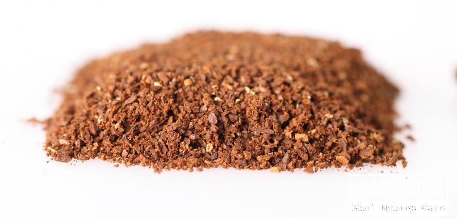
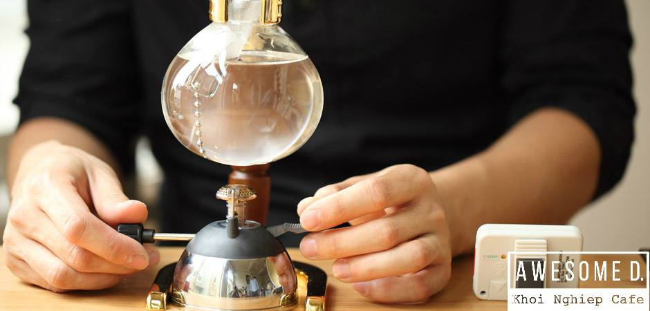
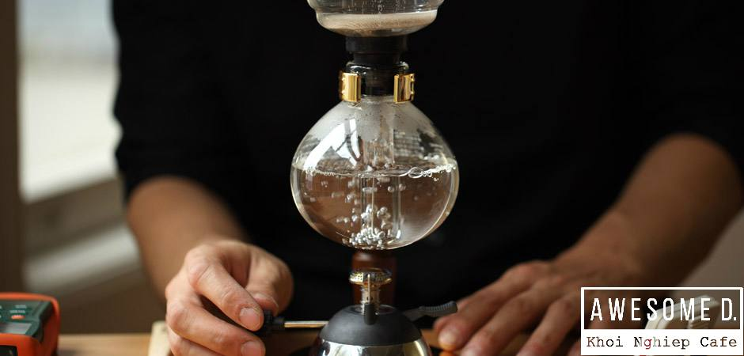
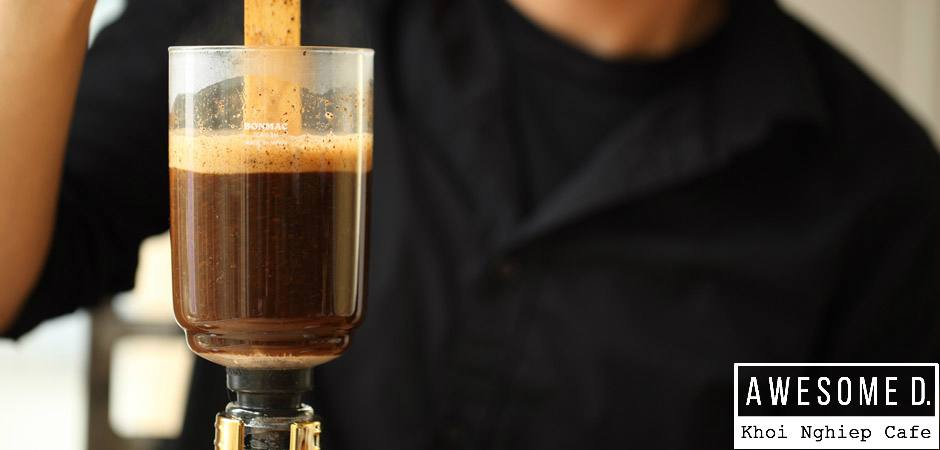
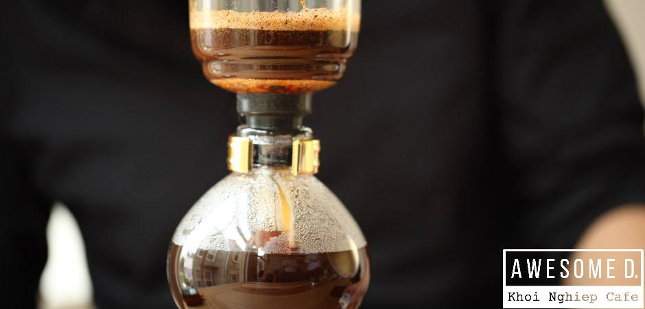
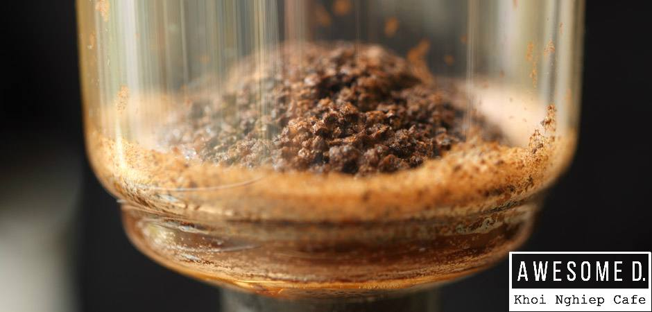
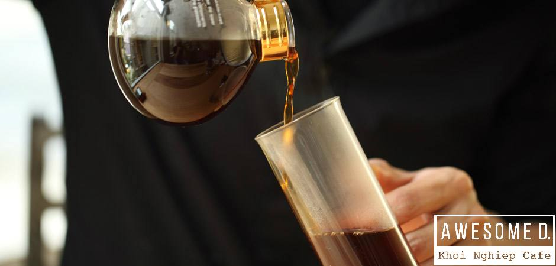

Cách pha cà phê Syphon – Phong cách Nhật Bản
PHA CÀ PHÊ BẰNG BÌNH SYPHON – BẠN ĐÃ THỬ?
Sử dụng Syphon là cách pha chế cafe áp dụng nguyên lý thẩm thấu ngược, bắt nguồn từ Đức. Phong cách này phát triển hơn khi du nhập vào Nhật từ những năm 1950, người Nhật đã cải biến để tạo nên nghệ thuật pha cà phê tuyệt vời này.
Kiểu pha cà phê này đã du nhập vào Việt Nam và thu hút rất nhiều sự quan tâm của các tín đồ yêu thích cà phê. Ngày càng có nhiều quán cà phê mang phong cách này vào không gian pha chế của mình để thu hút khách hàng. Tại nhà bạn cũng có thể tự pha cho mình một tách cà phê với bình syphon nếu muốn.
Cách pha cà phê bằng siphon cũng tựa tựa như cách pha cà phê bằng bình Moka vậy, đặc biệt hơn ở chỗ khi hơi nước bay lên thấm qua cà phê và kết thúc quá trình này, ta tắt bếp để cà phê một lần nữa thấm ngược lại bình đựng. Bây giờ thì bạn hãy xem từng bước nhé.
Step 1 – Đầu tiên hãy ngâm tấm lọc cà phê vào nước sôi trong 3-5 phút, sau đó đặt ngay ngắn vào phễu
Step 2 – Cẩn thận đổ lượng nước sôi cần dùng vào trong bình chứa hình cầu (khoảng 300ml)
Step 3 – Xay khoảng 45g cà phê và đổ cà phê vào phễu. Kích cỡ bột cà phê nên mịn một chút, giống như pha phin vậy
Step 4 – Cẩn thận lắp phễu vào bình chứa hình cầu, sau đó đặt bếp lửa ở phía dưới giống như hình, hoặc sử dụng bếp nhiệt halogen
Step 5 – Bật bếp để đun nước, nước sôi sẽ bốc hơi và hơi nước sẽ thấm qua cà phê ở phễu
Step 6 – Khi nước bốc hơi lên hẳn hãy cứ tiếp tục để bếp như vậy trong vòng 10 giây, dùng đũa tre khuấy tròn, sau đó hãy tắt bếp và đợi cà phê chảy ngược xuống bình đựng
  Bây giờ thì thưởng thức cà phê thôi !
Nguyễn Thanh Tình - PHP39 (Sưu tầm)